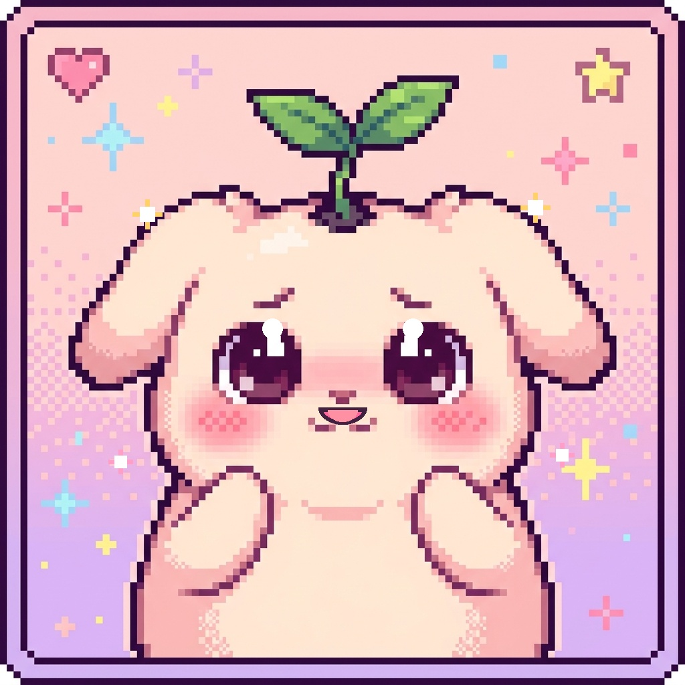
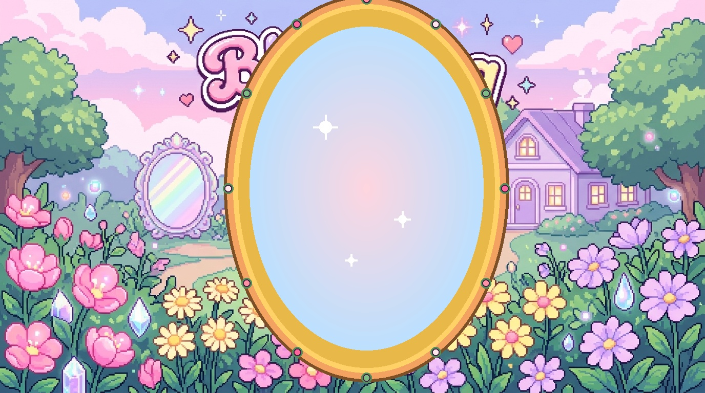
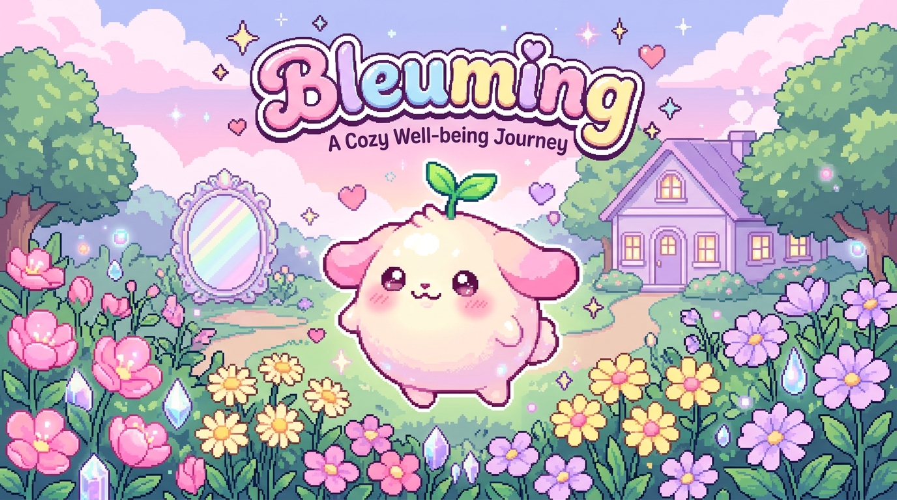
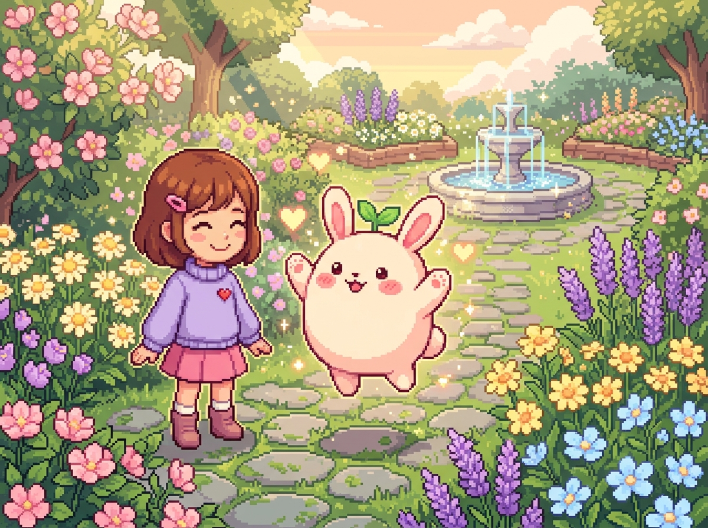

Flora, treasures, and memories collected on your journey
Your discoveries will appear here as you explore the garden. Each day brings new things to find! 🌸
Understanding Polycystic Ovary Syndrome (PCOS & PCOD) without judgment
PCOS can look different from person to person. Irregular periods, acne, or increased facial or body hair can have several possible causes; noticing a change does not tell you what caused it.
You can jot down changes you notice and when they happen. Notes can help you describe your experience, but they cannot diagnose a condition.
If something is bothering you, you can choose whether to discuss it with a qualified healthcare professional. PCOS is assessed using a person's history and appropriate evaluation; one test is not right for everyone.
General educational information, not a diagnosis or personal care plan. See ACOG and the U.S. Office on Women’s Health.
Emotional, physical, and maternal recovery after childbirth
Some people experience short-lived worry, sadness, or tiredness after birth. More intense, persistent, or disruptive sadness or anxiety can be a reason to seek support. A game cannot tell what is happening for any one person.
Experiencing emotional numbness, exhaustion, or anxiety does not mean you don't love your baby. PPD is a treatable medical condition, never a measure of your capability as a parent.
Unwanted intrusive thoughts can feel frightening. A thought alone does not establish a diagnosis or intent. If thoughts worry you, you deserve a private conversation with a qualified professional; if you feel anyone is in immediate danger, seek urgent local help.
Don't wait for vague offers. Ask trusted friends: "Could you drop off dinner on Tuesday?" or "Could you watch the crib for 90 minutes so I can take an uninterrupted shower and nap?"
General information only. See the U.S. Centers for Disease Control and Prevention and National Maternal Mental Health Hotline FAQs.
Sensory grounding when emotions feel overwhelming
When thoughts feel busy, you can pause if that feels useful. Breathing exercises are optional; you do not have to calm down or complete a task.
Re-anchor your focus to tangible physical realities: notice 3 soothing colors, feel 2 gentle textures (warm sweater, cool breeze), and speak 1 kind affirmation to yourself.
Some people find that naming an emotion makes a little room around it. You do not have to name it, fix it, or feel differently right now.
Fictional examples of questions and practical requests; nothing here is saved from your chat.
• Postpartum Support International HelpLine: Call 1-800-944-4773 or text HELP to 800-944-4773 (English). It is not an emergency line.
• National Maternal Mental Health Hotline: Call or text 1-833-852-6262, any time.
• 988 Suicide & Crisis Lifeline: Call or text 988 in the United States and its territories. Elsewhere, contact local emergency or crisis support.
Click 3 pastel colors to gently center your senses.

Choose stories you’d like to see. These are content preferences, not health labels. Change them anytime.

A new keepsake has been added to your room.